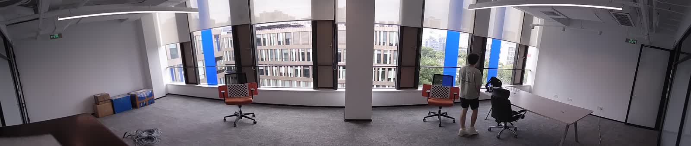

Multi-camera Stitching
多路全景拼接
覆盖相机采集、内外参标定、Warp、画布融合、编码和 RTSP 输出，适配不同拍摄距离下的拼接配置。
2026.06—2026.09 · 图像算法工程师（实习）
基于 Ambarella CV7x 完成双目、三目相机标定、全景拼接与 RTSP 输出，并以全景视频为输入实现篮球 ePTZ 电子云台，完成 PC 算法验证与板端联调。
多目相机拼接负责完成多路画面对齐、融合与视频流输出；篮球 ePTZ 以全景视频为输入，完成篮球检测、运动轨迹分析与电子裁剪。
Multi-camera Stitching
覆盖相机采集、内外参标定、Warp、画布融合、编码和 RTSP 输出，适配不同拍摄距离下的拼接配置。
Electronic Pan-Tilt-Zoom
覆盖篮球候选检测、轨迹修复、换边判断、裁剪窗口规划和视频输出，并完成 Ambarella 板端联调。
Multi-camera Stitching

根据镜头与 Sensor 组合采集标定图，生成内参、去畸变映射和相机间位姿；将各路图像映射至统一画布，完成融合、编码和 RTSP 输出。适配 IMX577、IMX678 等 Sensor，覆盖 1080P 和 4K 输入。
工程问题
多相机难以同时对齐远近不同深度的目标。远景标定时，近处容易出现重影或压缩；近景标定后，远处可能发生错位。针对不同使用距离保留对应配置，并支持运行时参数微调。
展示三路画面在室外远景下的横向覆盖。
针对更近的目标平面重新配置拼接关系。
保留正常、重影与压缩片段，用于定位视差影响。
Basketball ePTZ
基于固定的 3840×960 全景视频进行实验，设置检测频率和前视时间，并使用人工标注点检查轨迹与最终裁剪结果。以下数据仅对应该视频和该配置。
上半部分保留全景、轨迹与 Crop 规划信息，下半部分为最终电子裁剪画面。
Frozen run · 约 4 分钟
指标口径：381 / 381 指最终裁剪窗口对可见球人工标注点的覆盖，不是模型检测准确率；15 FPS 是检测采样率，不是最终视频帧率。
完成 YOLO-World-S 板端适配、双路单目切块检测、单目坐标到全景坐标转换、电子裁剪、编码和 RTSP 输出。
轻量预览记录实机环境下的篮球识别、自动换边和电子裁剪效果。
Board integration
完成真实硬件环境下的篮球识别、自动换边和电子裁剪联调。PC 实验中的 381 / 381 仅代表固定视频上的裁剪覆盖结果，不作为板端或所有场景的通用指标。
交付内容包括相机标定与拼接配置、篮球 ePTZ PC 实验结果，以及已在 Ambarella 板端验证的检测、裁剪和 RTSP 链路。
多相机标定和拼接参数生成；篮球候选聚合、轨迹修复、换边判断和裁剪窗口规划。
PC 实验、不同配置对比、Ambarella 板端适配、坐标转换、电子裁剪和 RTSP 联调。
整理标定与启动步骤、参数文件、实验记录和排错方法，保留室内近景与室外远景的配置。